Hello, I'm Alfid J.R. 👋


👨💻 About Me
I am a passionate Website Developer and UI/UX Designer specializing in responsive, user-centric web platforms and intuitive digital interfaces. I focus on bridging the gap between clean visual systems and scalable backend architecture.
⚡ Quick Highlights
- 🏢 Role: Website Manager & Programmer
- 🎯 Focus: Dynamic Platforms & Automation
- 🎓 Degree: B.Comp.Sc. in Informatics
- 🎨 Craft: Bento UI & Design Systems
🛠️ Tech Stack & Arsenal
Backend & Database
Frontend & Mobile
UI/UX & Creative
DevOps & Workflow
📊 GitHub Analytics & Metrics
🐍 Contribution & Activity Graph

📫 Let's Connect & Collaborate
Open for web platform development, UI/UX design collaborations, and tech discussions.